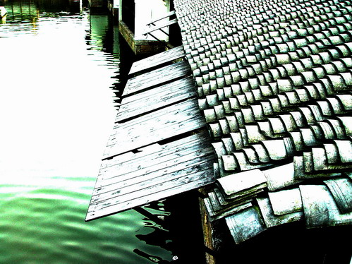
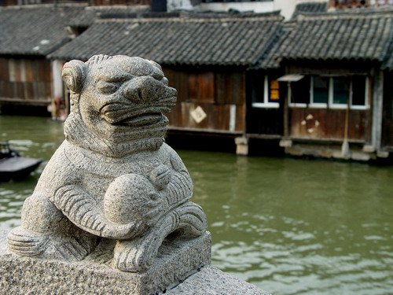
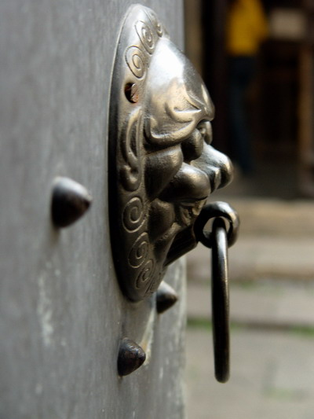
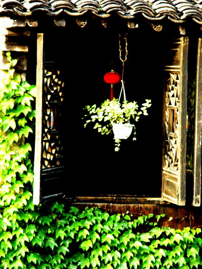
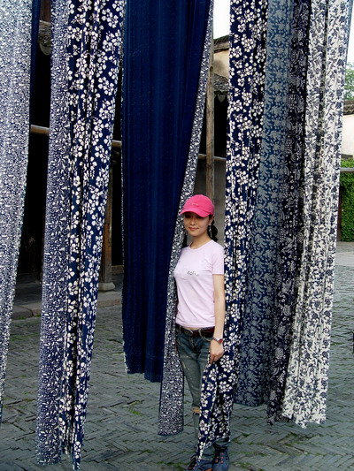

似水年华*乌镇 @ May 08, 2006
因为一部电视连续剧《似水年华》而开始向往乌镇，结果......很失望。只有驾驶过程充满着乐趣。
浙江农村的房子造得跟小古堡似的，大多尖顶，外面用马赛克装饰，比较精致华丽，比江苏的农村要富裕。这次还去了杭州，上次去杭州旅游是12年前。杭州还是有一些变化的，西湖边上多了一片国际名品专卖店，街上跑的cayman相对南京来讲挺多的、还有porsche，宝马、奥迪在杭州似乎司空见惯了，出租车是大众的宝来和雪铁龙的毕加索，从出租车来看好象档次比南京要高。这个城市的另一个可爱的原因是风景区和市中心融合在一起，成片的绿化有点象南京的中山陵，令人舒心！
黄金周，黄金粥。
决定以后的黄金周要么不出去，要出去旅行就到远的生僻的地方去。城市在黄金周期间象公共汽车一样被拥挤着！节前本来打算去拉萨，或者云南，种种原因放弃了。这里介绍一下别人去拉萨游玩的片段：
1）[拉萨生活]060425
2）060427 今天顺利拆线
3）【060507】回到拉萨





9 Responses to “似水年华*乌镇”
2006-05-08
呵呵，去乌镇啦！还去了杭州！好诶……
2006-05-08
呵呵。杭州的出租车还是大众passat和现代的Elantra为主吧.....5.1假期去了南京。很喜欢那里的明孝陵。
2006-05-09
5.1去了山西，云冈石窟—>悬空寺—>五台山—>平遥古城。
2006-05-09
一二四张图片不错,细雨纷飞的黄昏,倚窗读书,或者和朋友对饮
2006-05-09
下次去云南记得叫上我噢，至今我还对那流连忘返．拉萨还没去过，也是我的下一个目标．
2006-05-09
我也在乌镇染布的那个地方拍了照片,和你站的位子也一样.我是前年去的.去水乡游玩,都是坐船比较有意思.其他的各个镇都差不多,大同小异.我51在家当留守人士,那也没去.期待下次去南京游玩,上次公差太忙连续加班,没有游玩的时间.
2006-05-10
爬雪山可不是好玩的，没专业训练最好别去，象咱们这样的，还是搞点休闲游，月底去VEGAS玩4天，那可以人间天堂。我觉得中国应该大力发展赌博业色情业，赌博业色情业是绿色产业，低投入高产出。
2006-05-10
赌博业色情业合法化，先生们会兴高采烈的！
2009-11-02
我去乌镇的时候，当时还没有开发。都是老户。城镇是活的。现在乌镇是死的。
Leave A Reply
存档只读，评论已关闭。